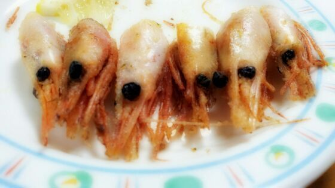

ろってぃ−−☆だよ /
WAO ! ! ! 『手や^^笑』
今日で プリンシパル13回目が
終了いたしました (・∨・)!
明日はとうとう千秋楽 !
今日・・・
お昼の部 明田川に立候補し
夜の部は いつみに立候補しました♪
明田川...明田川太郎役★
心の底から とっても
うれしーキモチーーー(>∨<)
でした。
ぃゃぃゃ...あの...本当に
ありがとうございました!
あの素晴らしい光景を
明日、そして 大阪公演で
又見れる様に全力で
頑張って行きます !
本当に 本当に
ありがとうございましたあっ)))
... いつみ役は又ダメでした(´；ω；｀)
何度も何度も挑戦しているんですが
...正直 もぅど−したらいいんやろう。
一晩 又色々と考えてみます。
なんだかごめんなさい。
心が折れそうになる時もあるけど
頑張ります☆
ぢゃあ〜最後にっ

えびちゃんのお顔
並んでる,目がかわいい。
つい撮ってしまったお(`・ω・)☆
ぢゃあねぇ−−ん ♪
大好きっ!
おやすみなさい...(〃∨〃)のし